Visualizations
Contents
Visualizations#
The BigEarthNet encoder library provides a quick and easy way to convert a BigEarthNet folder to a BigEarthNet-Patch-Interface.
from bigearthnet_common.example_data import (
get_s2_example_patch_path,
get_s1_example_patch_path,
)
import bigearthnet_encoder.encoder as ben_encoder
from rich import print
s2_patch_folder_path = get_s2_example_patch_path()
s1_patch_folder_path = get_s1_example_patch_path()
s2_patch = ben_encoder.tiff_dir_to_ben_s2_patch(s2_patch_folder_path)
s2_patch
BigEarthNet_S2_Patch with:
B01 with 60m spatial resolution and a size of (20, 20) pixel
B02 with 10m spatial resolution and a size of (120, 120) pixel
B03 with 10m spatial resolution and a size of (120, 120) pixel
B04 with 10m spatial resolution and a size of (120, 120) pixel
B05 with 20m spatial resolution and a size of (60, 60) pixel
B06 with 20m spatial resolution and a size of (60, 60) pixel
B07 with 20m spatial resolution and a size of (60, 60) pixel
B08 with 10m spatial resolution and a size of (120, 120) pixel
B8A with 20m spatial resolution and a size of (60, 60) pixel
B09 with 60m spatial resolution and a size of (20, 20) pixel
B11 with 20m spatial resolution and a size of (60, 60) pixel
B12 with 20m spatial resolution and a size of (60, 60) pixel
The patch-interface provides easy introspection:
print(s2_patch.get_band_by_name("B03"))
B03 with 10m spatial resolution and a size of (120, 120) pixel
The same also works for Sentinel-1 data:
s1_patch = ben_encoder.tiff_dir_to_ben_s1_patch(s1_patch_folder_path)
s1_patch
BigEarthNet_S1_Patch with:
VH with 10m spatial resolution and a size of (120, 120) pixel
VV with 10m spatial resolution and a size of (120, 120) pixel
Visualizing individual bands#
If we are only interested in a single band, we can usually use plt.imshow.
A nice side-effect of plt.imshow is that it automatically applies a min/max normalization to one-dimensional input data.
So the outputs look “good by default”:
Sentinel-2#
import matplotlib.pyplot as plt
def _imshow_no_axis(data, cmap="gray"):
plt.imshow(data, cmap=cmap)
plt.axis("off")
b03_data = s2_patch.get_band_data_by_name("B03")
_imshow_no_axis(b03_data)
All bands
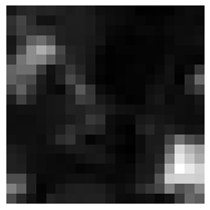
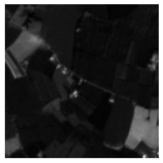
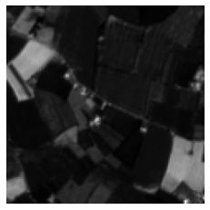
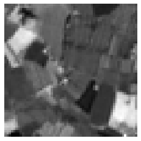
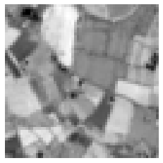
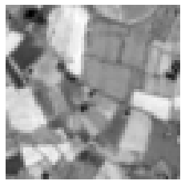
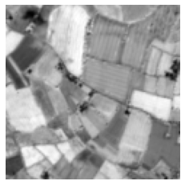
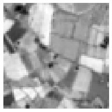
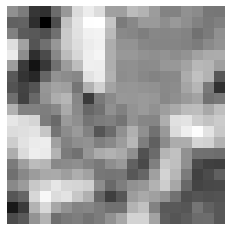
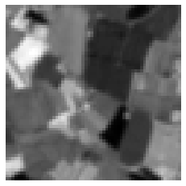
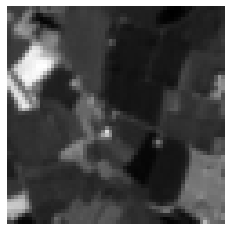
Sentinel-1#
import matplotlib.pyplot as plt
vv_data = s1_patch.get_band_data_by_name("VV")
_imshow_no_axis(vv_data)
vh_data = s1_patch.get_band_data_by_name("VH")
_imshow_no_axis(vh_data)
Visualizing RGB bands of Sentinel-2#
import numpy as np
from bigearthnet_patch_interface.s2_interface import BigEarthNet_S2_Patch
def _read_rgb_from_s2_patch(s2_patch: BigEarthNet_S2_Patch) -> np.ndarray:
return np.stack(
[s2_patch.get_band_data_by_name(b) for b in ["B04", "B03", "B02"]], axis=-1
)
# plt.imshow expects the channel dimension as the last axis!
rgb_arr = _read_rgb_from_s2_patch(s2_patch)
rgb_arr.shape
(120, 120, 3)
# As shown here, no implicit normalization is done!
plt.imshow(rgb_arr)
plt.axis("off");
Clipping input data to the valid range for imshow with RGB data ([0..1] for floats or [0..255] for integers).
A simple min-max normalization is often a good start for a nice looking visualization. The usual issues are water patches that have very similar values across multiple bands and often produce either very noisy or black images or snowy patches. Some more advanced visualization techniques like histogram equalization with manual brightness adjustment usually lead to the best results.
plt.imshow((rgb_arr - rgb_arr.min()) / (rgb_arr.max() - rgb_arr.min()))
plt.axis("off");